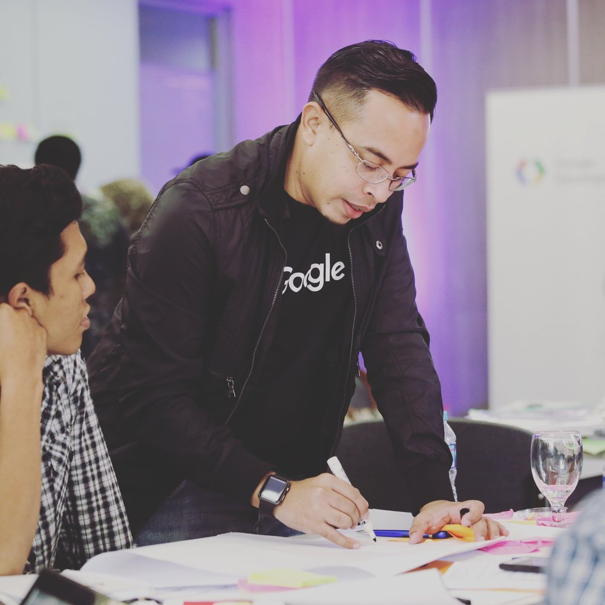

DetikCode.com |
Khoirul AnwarPria
Mei 09, 2019 Views: 1,020,009dengan gelar lengkap Dr. Eng. Khoirul Anwar, S.T., M. Eng. In ini menuntaskan studi doktoralnya di Nara Instituite of Science and Technology, Jepang pada tahun 2008.
Read More

Borrys Hasian
Jan 09, 2016 Views: 2,009,123Dialah Borrys Hasian. Pria lulusan Electrical Telecommunication di Institut Teknologi Telkom ini sejak tahun 2015 telah menjadi mentor UX/UI pada Google Launchpad Global Mentor.
Read More
Ranking Bahasa Pemprograman
Feb 19, 2018 Views: 15,009,123Untuk itulah kini Teknologi.id menampilkan data mengenai 7 bahasa pemrograman yang paling banyak diminati di tahun 2018 dilansir dari Coding Dojo dan berdasarkan data dari situs kerja Indeed.com
Read More